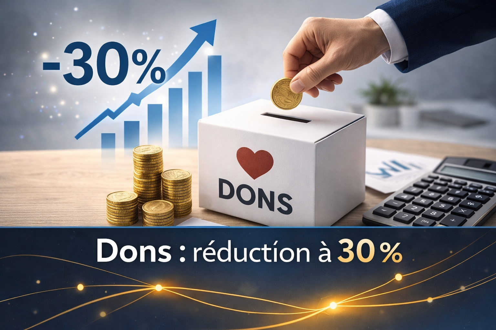

E-facturation 2026
Rappel des nouvelles obligations de facturation électronique et checklist technique pour basculer avant l’échéance nationale.
Lire plusRetrouvez nos dernières actualités fiscales et conseils pratiques pour votre entreprise.
Rappel des nouvelles obligations de facturation électronique et checklist technique pour basculer avant l’échéance nationale.
Lire plusTour d’horizon du nouveau plafond journalier et des ajustements à prévoir dans vos politiques RH et payroll.
Lire plus
Explications sur l’augmentation de la réduction d’impôt et les documents à fournir pour sécuriser la déduction.
Lire plusPourquoi instaurer un compte-provisions dédié, comment l’alimenter et suivre vos décaissements trimestriels.
Lire plusSynthèse des nouveaux pourcentages CO2, impacts sur l’avantage en nature et options hybrides/électriques.
Lire plusDétails sur les nouveaux seuils, la procédure pour changer de régime et les pièges à éviter lors de la transition.
Lire plusAperçu des nouveaux barèmes et crédits d’impôt ainsi que les actions à planifier pour limiter l’impact.
Lire plusMise à jour des montants journaliers et annuels pour les bénévoles ainsi que les obligations de reporting ASBL.
Lire plusRetrouvez les réponses à vos questions fréquentes par catégorie.
Les indépendants peuvent déduire plusieurs frais professionnels à condition qu’ils soient justifiés et liés à l’activité: matériel, déplacements, téléphonie, loyers (selon cas), formations, frais de transport, etc.,
Le taux TVA dépend du type de service, du lieu de prestation et du statut du client. Une vérification au cas par cas est importante pour rester conforme et éviter les régularisations.
Créer une société en Belgique implique d’abord de rédiger un plan financier, de choisir la forme juridique (souvent une SRL) et de passer devant un notaire pour constituer officiellement la société. Ensuite, il faut l’inscrire à la Banque-Carrefour des Entreprises, activer le numéro de TVA et s’affilier à une caisse d’assurances sociales.
Les déclarations TVA trimestrielles sont soumises à la date du 25 du mois qui suit chaque trimestre. Celui-ci peut varier selon le calendrier TVA régis par l’administration TVA. Il est conseillé de préparer les documents à l’avance pour éviter tout retard ou pénalité.
Factures d’achat et de vente, extraits bancaires, justificatifs de frais, notes de crédit, documents sociaux et fiscaux : une bonne organisation facilite le suivi et réduit les erreurs.
IPP concerne les personnes physiques (indépendants en nom propre). ISOC concerne les sociétés. Le calcul, les taux et les obligations diffèrent. Nous vous aidons à choisir la structure la plus adaptée et à anticiper l’impôt.
Les VA permettent de payer une partie de l’impôt au fur et à mesure. A partir de la 4ème année de l’indépendance, ne pas en faire entraîne une majoration. Nous planifions les VA selon vos revenus et votre trésorerie.
Il existe plusieurs leviers (rémunération dirigeant, dividendes, avantages en nature). Le bon mix dépend de votre situation et des règles fiscales. Nous structurons une stratégie légale et claire.
Certaines dépenses ne sont pas (ou pas totalement) déductibles fiscalement. Elles doivent parfois être réintégrées dans le résultat imposable. Nous vous aidons à identifier les risques et à tenir une comptabilité propre.
Il faut conserver factures, extraits, contrats, justificatifs et pièces comptables. La durée exacte dépend des règles applicables. Nous vous aidons à mettre en place un archivage simple et conforme.
Inventaire, amortissements, provisions, régularisations, vérification TVA, cohérence des comptes. Une clôture bien préparée évite les surprises et améliore votre pilotage.
Depuis le 1er janvier 2026, seul le véhicule électrique est déductible pour les entreprises. En revanche, pour les personnes physiques, la déductibilité dépend encore du type de véhicule, de son usage et des règles en vigueur (carburant, entretien, leasing…). Nous calculons ce qui est déductible et ce qui doit être limité.
Dépôt des déclarations, paiement, listing annuel, éventuelles obligations intracom. Nous gérons le calendrier et les rappels pour éviter retards et pénalités.
Une note de crédit corrige une facture (retour, remise, erreur). Elle modifie la base TVA et doit être encodée correctement pour que la déclaration TVA soit juste.
Selon le cas, la correction passe par la déclaration suivante ou par une procédure spécifique. Le plus important est d’agir vite et de documenter l’erreur.
C’est un récapitulatif des ventes à des clients assujettis belges. Il doit être déposé à une échéance précise. Nous le préparons à partir de votre comptabilité.
Si vous facturez ou prestez à des assujettis dans l’UE, ou réalisez certaines opérations, une déclaration intracom peut être requise.
La récupération TVA dépend du type de dépense et des limitations. Certaines TVA sont partiellement ou non récupérables.
La franchise (petites entreprises) permet de ne pas facturer la TVA, mais limite la récupération de TVA sur achats à condition que vous ne percevez pas un chiffre d’affaire supérieur à 25.000 euros en fin d’année. Le choix de la franchise dépend de vos clients et de vos coûts.
Mentions légales, numéros TVA, dates, description, taux, total, etc. Une facture non conforme peut poser problème en contrôle. Nous vous donnons un modèle.
L’administration peut demander pièces, factures, relevés et justification des opérations. Une comptabilité à jour et des documents bien classés réduisent le stress et les risques.
En Belgique, un indépendant à titre principal exerce son activité comme source de revenu principale et paie des cotisations sociales complètes, lui donnant une protection sociale étendue.
Idéalement, comptes séparés et justificatifs clairs. Mélanger complique la comptabilité et augmente le risque d’erreur. Nous vous donnons une méthode simple.
Oui, sous conditions. Une partie du loyer, des charges (eau, gaz, électricité) et des intérêts peut être déduite si l'espace est utilisé à des fins professionnelles. Un calcul au prorata est généralement appliqué. Nous vous aidons à documenter correctement cette déduction.
Factures ventes/achats, extraits bancaires, justificatifs de frais, notes de crédit, documents sociaux et fiscaux. Plus c’est régulier, plus la comptabilité est fiable.
Il faut intégrer vos charges fixes et variables, les cotisations sociales, l'impôt estimé et la TVA le cas échéant. Nous vous aidons à construire un tarif cohérent avec votre situation afin que votre activité soit rentable après impôts.
Cela dépend du pays, du statut du client (B2B/B2C) et du type de service. Nous vérifions chaque cas et les obligations intracom.
Oui : certaines dépenses s’amortissent sur plusieurs années (ordinateur, mobilier…). Nous appliquons la bonne durée et gardons les justificatifs nécessaires.
Il permet de ne pas facturer la TVA, mais limite la récupération de TVA. Le choix dépend de vos clients et de vos coûts. Nous comparons les avantages et inconvénients.
Suivi des encaissements, relances, échéances fournisseurs, planification TVA/impôts. Nous mettons en place un tableau de pilotage simple.
Il sert à planifier revenus et dépenses, comparer le réel au prévu et ajuster rapidement la stratégie.
Process de facturation, classement, validation, rythme d’envoi et outils digitaux. Nous standardisons l’organisation pour gagner du temps et sécuriser.
Oubli de factures, mauvaise ventilation des taux, notes de crédit mal traitées ou codification incorrecte des opérations. Une comptabilité encodée régulièrement et un contrôle avant envoi réduisent considérablement ces risques.
Inventaire, justificatifs, amortissements, régularisations, documents manquants. Plus on prépare tôt, plus la clôture est simple.
Une facture impayée doit être suivie via des relances structurées. Comptablement, elle peut nécessiter une provision pour créances douteuses. En cas de non-recouvrement, elle peut être passée en perte. Nous gérons ce suivi et vous conseillons sur les démarches appropriées.
En pratique, cela se justifie souvent lorsque les bénéfices dépassent un seuil où la fiscalité en personne physique devient plus lourde, ou lorsque vous souhaitez optimiser votre rémunération entre salaire et dividendes. Créer une société est également utile pour mieux structurer et sécuriser votre activité (responsabilité limitée) et préparer une croissance.
Dossiers incomplets, documents non transmis, soldes incohérents. Nous organisons une reprise propre et sécurisée.
Clôture, comptes annuels, déclarations fiscales, dépôts et obligations TVA éventuelles. Nous gérons le calendrier et les dépôts.
La rémunération du dirigeant correspond au revenu que se verse le chef d’entreprise pour son activité au sein de sa société. Elle peut prendre différentes formes (salaire, avantages, dividendes), et constitue un élément central de l’organisation financière et fiscale de l’entreprise. Elle est particulièrement importante car elle permet d’optimiser la fiscalité globale, de garantir une protection sociale suffisante et de structurer les flux financiers entre la société et son dirigeant. En Belgique, viser une rémunération d’environ 50.000 € est souvent stratégique : ce niveau permet notamment de bénéficier du taux réduit à l’impôt des sociétés (sous certaines conditions) tout en assurant un équilibre entre rémunération personnelle et rentabilité de la société.
Les investissements s’amortissent sur plusieurs années. Nous choisissons une durée réaliste et conforme et suivons les immobilisations.
Ce sont des avantages privés pris en charge par la société avec un traitement fiscal/social spécifique. Nous les calculons et les déclarons correctement.
Process, calendrier, envoi régulier des pièces et suivi. Nous mettons en place une méthode simple et des rappels.
Il faut répondre dans les délais avec des pièces cohérentes et un dossier structuré. Nous préparons la réponse et vous accompagnons à chaque étape.